Todo lo demás, justo arriba
Los menús de la app actual, el sonido y el brillo, tu calendario, las notificaciones y la búsqueda empiezan en una sola barra arriba. Al hacer clic en ella, nunca le quita el foco a la app en la que escribes.
Barra de menús
Los menús de la app actual, arriba
Las apps con menús los muestran tal cual. Para las que no tienen, como los navegadores, el Explorador de archivos o Notion, tienes un menú con sus atajos habituales. Haz clic en un elemento y el atajo llega directo a la app, algo útil cuando las teclas no pasan bien, como en un escritorio remoto.


Sonido y brillo en un clic
El Centro de control pone a mano el brillo de la pantalla, la luz nocturna y el modo de energía. El menú de sonido cambia los dispositivos de salida y entrada y el volumen, y el menú de Bluetooth conecta tus auriculares con un clic.

Haz clic en el reloj para ver el calendario
El calendario muestra los festivos de Corea y las fechas lunares (los festivos de otros países aún no están disponibles). Pega una dirección iCal de Google Calendar u Outlook.com para ver también tus eventos.

Notificaciones
Avisos discretos arriba a la derecha
Las notificaciones de Windows aparecen como avisos arriba a la derecha, y las largas se despliegan con un clic. ¿Se te pasó algo? Haz clic en el reloj para ver las notificaciones agrupadas por app.
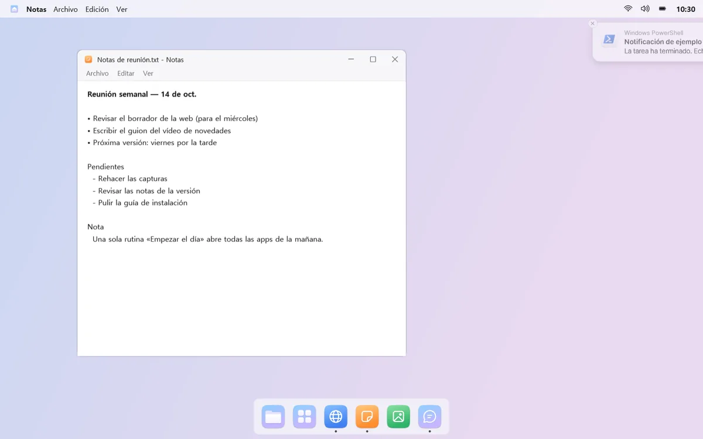
Dos saltos y un punto
Cuando llega una notificación, el icono de esa app en el Dock salta dos veces y deja un punto rojo. No sigue saltando, y puedes desactivarlo app por app.
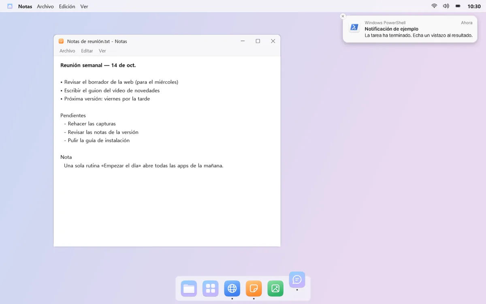
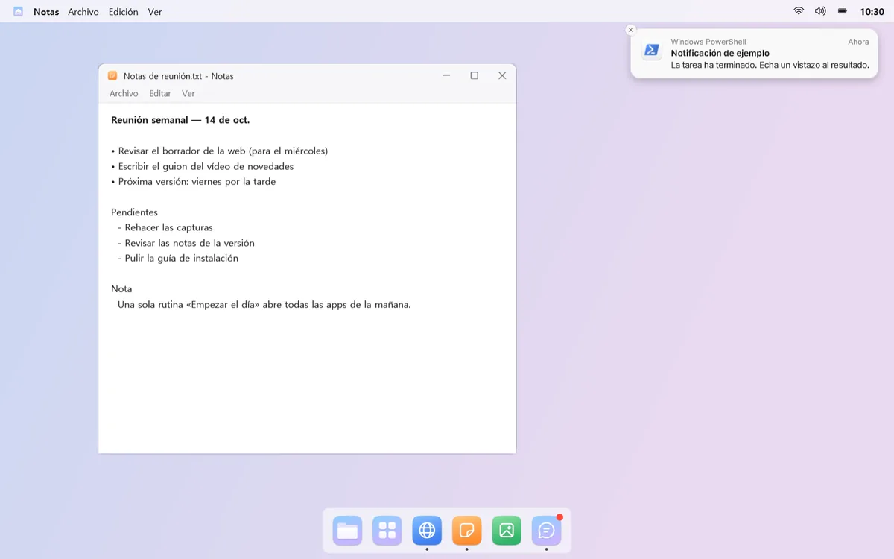
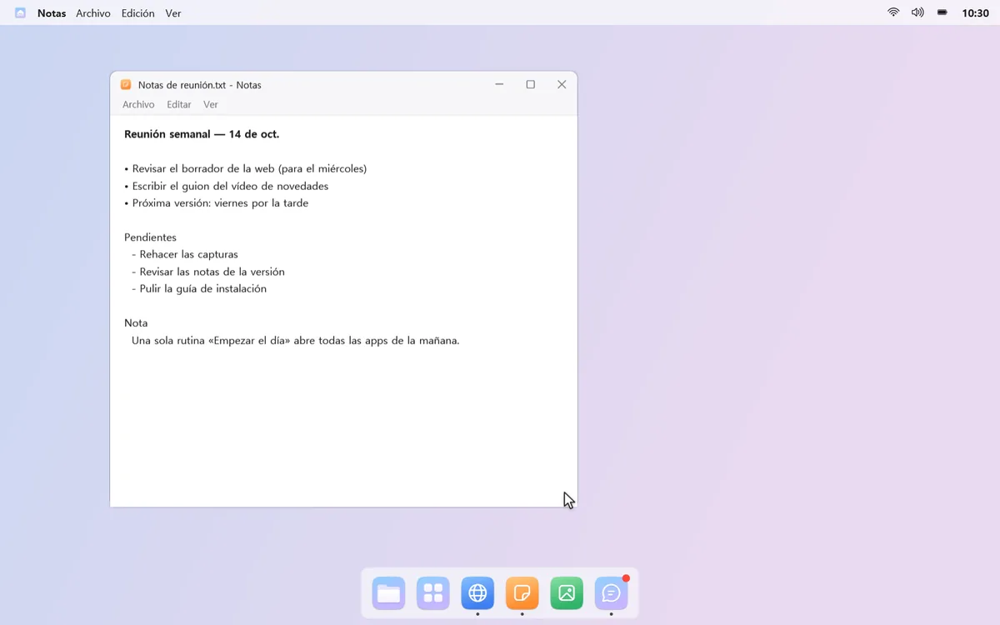
Búsqueda de mongdock
Encuéntralo con unas pocas teclas
Pulsa un atajo y se abre un cuadro de búsqueda en el centro de la pantalla. Encuentra apps, ajustes de Windows y archivos o carpetas con unas pocas teclas, como «ca» para la Calculadora.
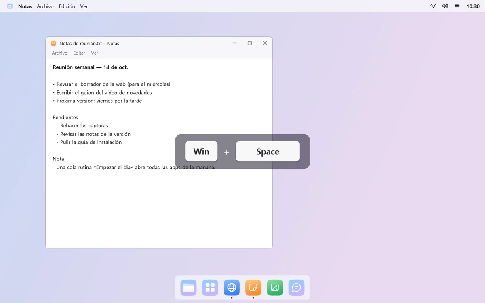

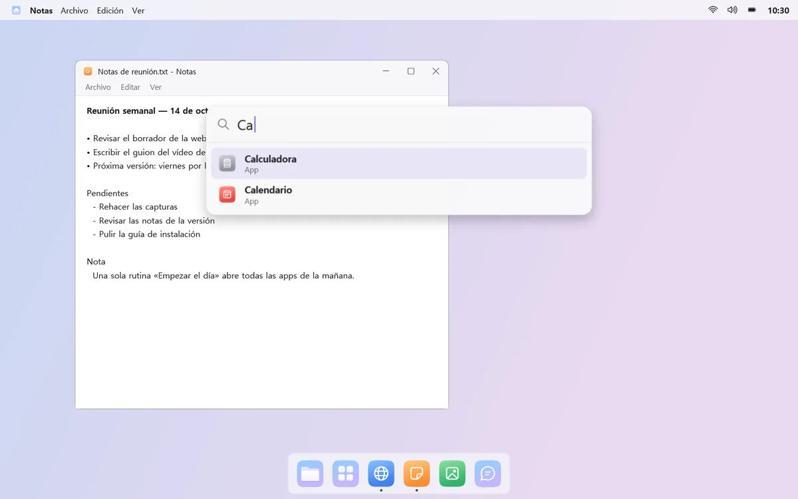
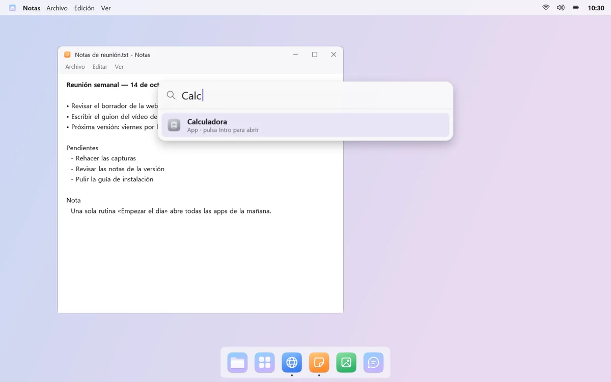
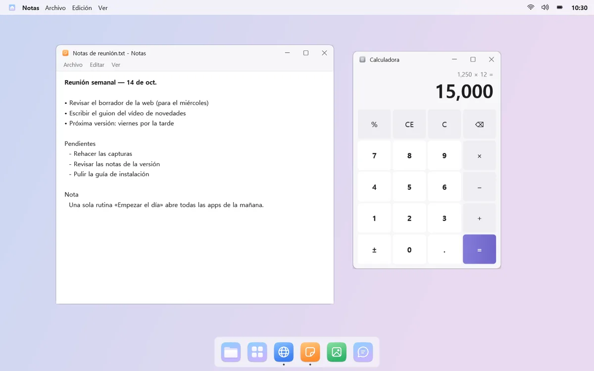
También cálculos rápidos y búsqueda web
Escribe algo como «200*15%» y el resultado aparece arriba; pulsa Enter para copiarlo. ¿No lo encuentras? Envía la misma búsqueda a la Búsqueda de Windows o a la web.
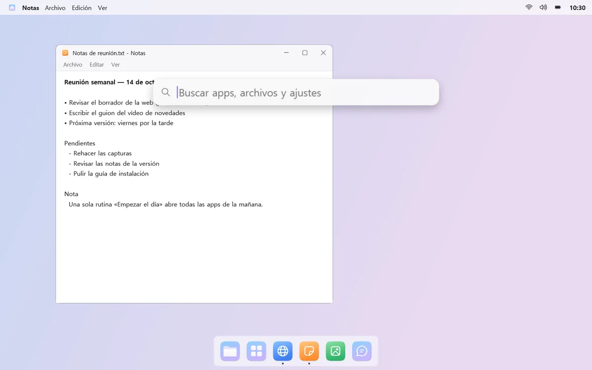
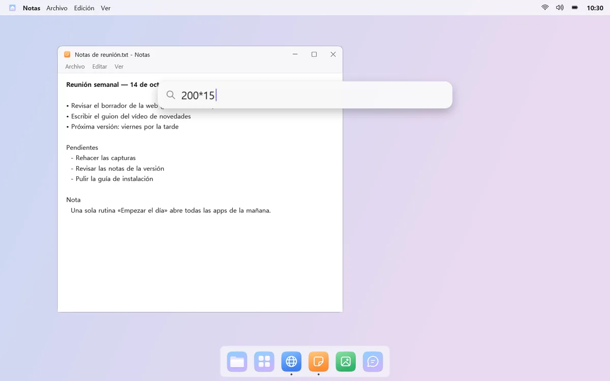
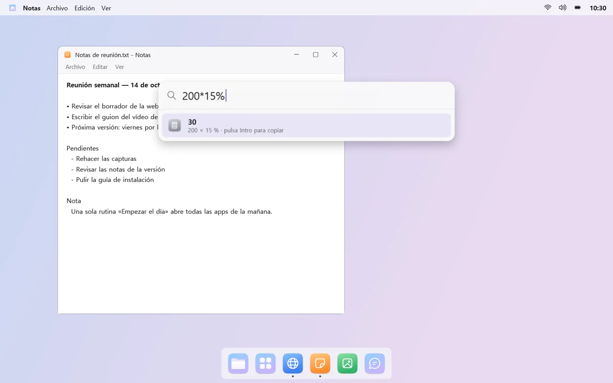
Conviene saber
- La primera vez que cambies el sonido de notificación, cierra sesión y vuelve a iniciarla para que se aplique.
- El brillo de los monitores externos solo se puede cambiar en monitores compatibles (DDC/CI).